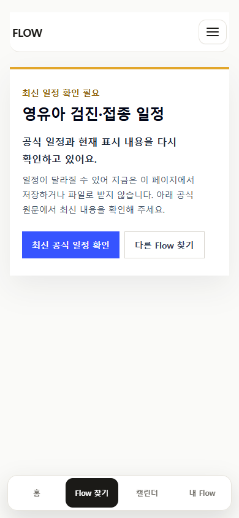
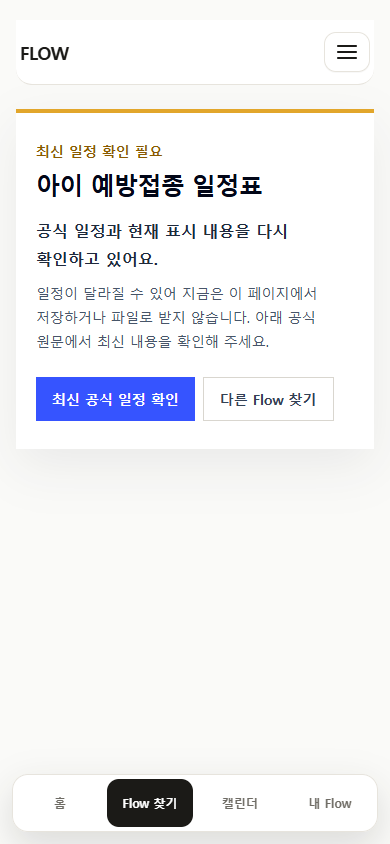
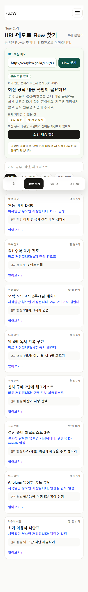
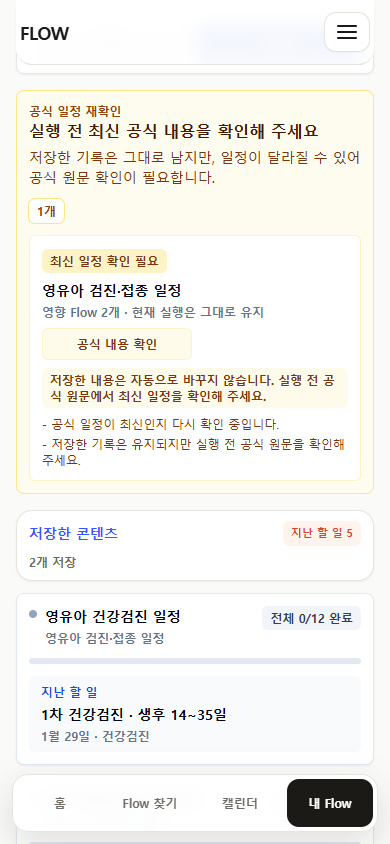
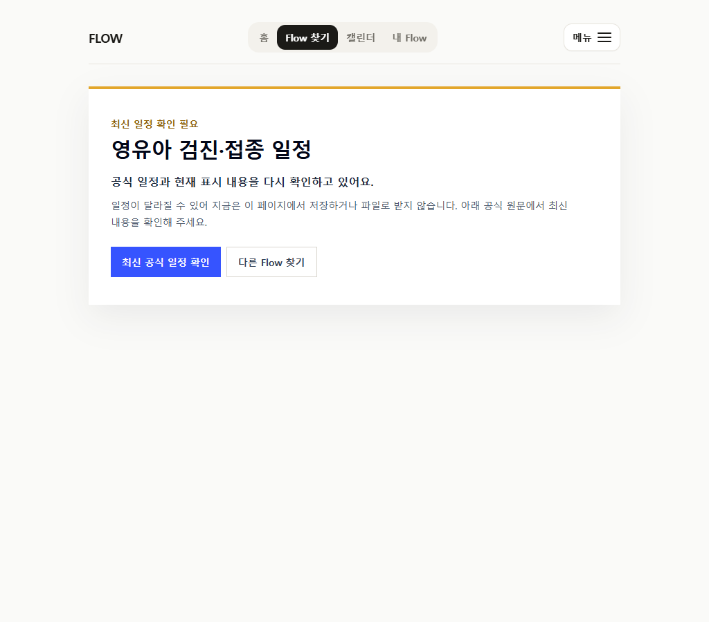
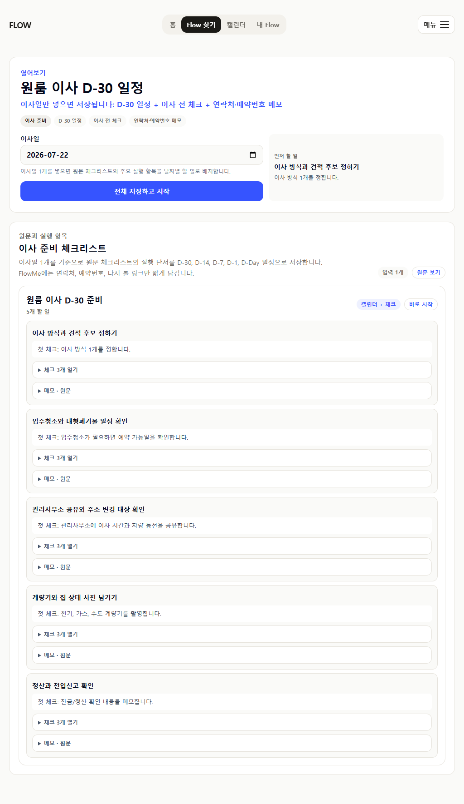

직접 열람
기존 저장본의 출처 링크가 깨지지 않도록 noindex 직접 route를 유지합니다.
CURRENT BUILD · 2026-07-12
이전 링크와 저장 기록은 보존하되, 최신 공식표 일치가 확인되지 않은 의료 콘텐츠는 신규 저장·export·URL hit·초안 우회를 중지했습니다.
기존 저장본의 출처 링크가 깨지지 않도록 noindex 직접 route를 유지합니다.
publicExecutionEnabled=false면 저장, export, URL hit, draft bypass를 모두 막습니다.
사용자 기록은 남기되, My Flow에서 숨길 수 없는 공식 일정 재확인 경고를 보여줍니다.






| 우선순위 | 콘텐츠 | 확인할 것 | 이번 변경 |
|---|---|---|---|
| High | year-end-tax-submit | 적용 연도와 공식 세무 절차 버전 | 없음 |
| High | postal-address-transfer | 행정 절차와 현재 서비스 경로 | 없음 |
| Medium | curated-funmom-learning-park | 카테고리 페이지 대신 article-level 실행 row | 없음 |
| Low | aircon-filter-cleaning | 낮은 제품 점수와 direct-route 유지 이유 | 없음 |
판단: `park`를 일괄 폐기하지 않습니다. 위험도와 출처 최신성에 따라 순차 감사하며, 고위험 콘텐츠부터 신규 실행을 보류합니다.